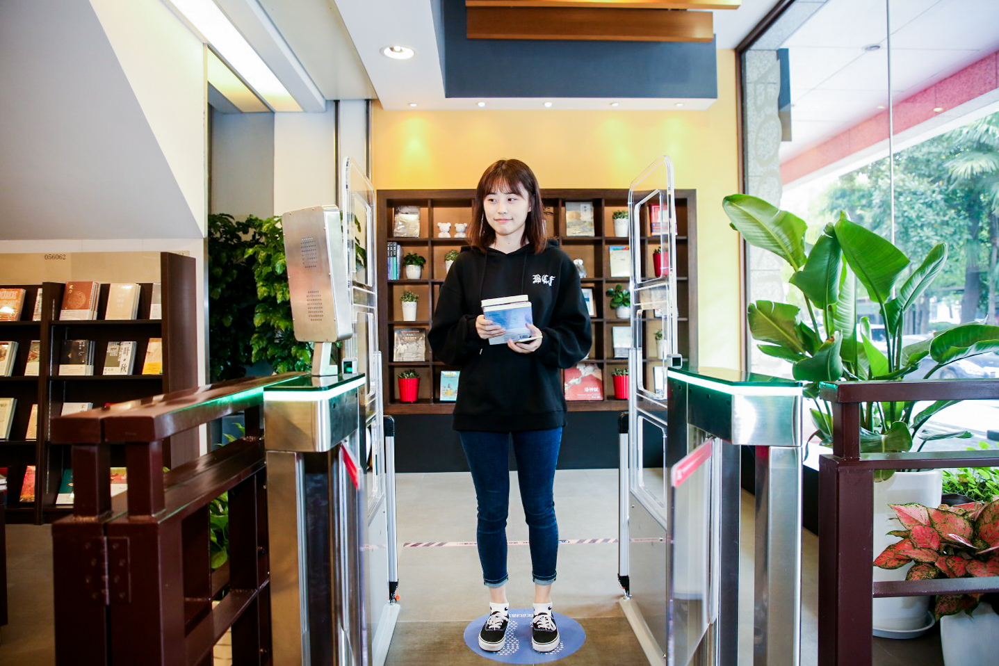

10月26日，全国最大的天猫新零售体验书店正式在杭州开业，成为杭城最新的一道风景线。
10月26日，全国最大的天猫新零售体验书店正式在杭州开业，成为杭城最新的一道风景线。
“书店的模式很新，刷脸就能完成支付的体验感觉很酷”，“蛮有趣的”、“方便”，体验过的几位杭州市民这样说道。

这家位于杭州天目山路的博库书城天目店，占地500平方米，地处市中心的黄金地段，涉及专业图书品种近4万种，以历史、哲学、文学、社会学等人文社科类别，是博库书城旗下以高品质学术性品种见长的书店，开业至今已有6年时间。
和天猫新零售牵手后，书店全面升级后重新亮相——智能付款、智能书架、人脸识别等多项创新技术已完美进入场景应用，消费者在店内购物，即可实现“扫码进店、自助选书、刷脸支付”，同时上线图书智能推荐和重力感应唤醒功能，提供人机互动的阅读新体验。
走进书店，首先印入眼帘的是改造后的智能门禁系统。读者在入口处可以用手机天猫App或支付宝账号扫码进入，人脸识别系统会自动识别并绑定用户信息。较为特别是，在书店的展架上设置有一个“智能导购书架”，货架上的液晶显示屏会自动显示图书的简介、作者等信息供读者参照。只要将图书从感应书架上取下，通过智能化的导购系统，还能推送更多的线上线下相关图书信息。
由于店内的每一本图书都植入了感应标识，所以逛完书店后，结算时只需带着选好的图书站在支付通道，智能支付系统就可以计算出应支付的总价款，刷脸即可完成支付。所以只要读者开通了免密支付，就可以大大方方的带着书本出门了，连扫码都不需要。
博库书城有限公司副总经理张姝华说，“博库这次和天猫新零售合作是对智慧书店进一步的探究，也是实体书店的补充，为实现商品经营向用户经营的升级提供新的途径。”未来，博库网络传媒集团将通过大数据分析，更精准的对读者的阅读偏好、购买类别、关注热点进行综合系统分析，为更加精准的图书推荐和阅读服务提供支撑。
其实这已经不是天猫第一次做新零售书店了。今年4月23日世界读书日，全国首家天猫新零售书店落地上海。书店在复旦大学南门外经营了14年，在新零售解决方案的改造下，老店焕然一新。目前除了周边的复旦师生和居民，很多消费者慕名远道而来，还吸引了明星王璐丹和黄渤先后来打卡，可以算得上是图书行业中的一家小有名气的“网红书店”。
天猫图书总经理灰衣表示，天猫作为中国第一大图书交易平台，未来将不断地在线上线下、多维度赋能传统行业，增加消费者体验，同时消费大数据也将能反作用于书店的经营与选品，让更多人爱上阅读，让图书产业持续焕发活力。
这家书店今年也将提前为天猫双11十周年预热，在10月26-28日期间，消费者可以享受全场8折的优惠。